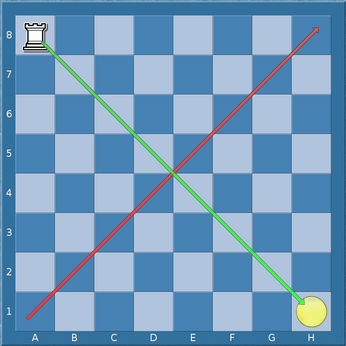
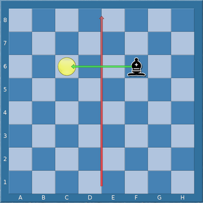
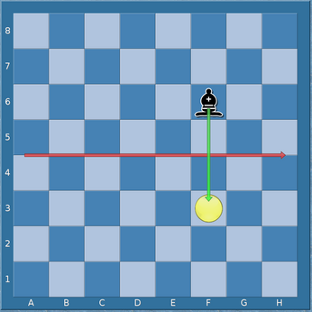

♗b2 about the a8 to h1 diagonal.
Certain transforms are defined on piece designators.
A diagonal flip transformation, applied to a piece designator, reflects each square in its square set about the main diagonal.
|  |
Diagonal flip of ♖a8 about the main diagonal.
|
For example, the diagonal flip of [◯⬤][a-h1-2,f6,h7] is
[◯⬤][a-b1-8,f6,g8].
An off-diagonal flip transformation applied to a piece designator reflects each square in its square set about the a8 to h1 diagonal.
|
|
Off-diagonal flip of ♗b2 about the a8 to h1 diagonal.
|
For example, the off-diagonal flip of ♖a8 is ♖a8.
The off-diagonal flip of [♗♝][a1-8], denoting a bishop on the
a file, is [♗♝][a-h8], denoting a bishop on the eight rank.
A vertical flip transformation applied to a piece designator reflects
each square in its square set about the vertical bisector of the board. For
example, the vertical flip of ◑f6, denoting a piece on f6, is
◑c6.
|  |
Vertical flip of ♝f6 about the vertical bisector.
|
A horizontal flip transformation applied to a piece designator
reflects each square in its square set about the horizontal bisector of
the board. For example, the horizontal flip of ◑f6 is
◑f3.
|  |
Horizontal flip of ♝f6 about the horizontal bisector.
|
A dihedral transformation of a piece designator is a flip transformation
followed by a flip transformation or the identity transformation (the first
flip transformation could be replaced by rotations by 90, 180, or 270 degrees).
There are 8 distinct dihedral transformations of the board. For example, the
results of applying all dihedral transformations to the piece designator
♕c2 are the 8 piece designators ♕c2,
♕b3, ♕b6, ♕c7, ♕f7,
♕g6, ♕g3, and ♕f2.

|
Dihedral transformations of ♕c2, for example:diagonal flip + diagonal flip (to c2) diagonal flip + identity transformation (to b3) diagonal flip + horizontal flip (to b6) horizontal flip + identity transformation (to c7) horizontal flip + vertical flip (to f7) off-diagonal flip + identity transformation (to g6) off-diagonal flip + horizontal flip (to g3) vertical flip + identity transformation (to f2) |
A unit right shift transformation, applied to a piece designator, shifts each square in its square set over to the right one square. If a square is already at the right edge of the board, it is removed from the square set. If a square is at the left edge of the board, it is also added to the new square set.
For example, the unit right shift transformation of ♕d4 is
♕e4. The unit right shift transformation of ♕[c2,h2]
is ♕d2. The unit right shift transformation of
♕[a2,c2,h2] is ♕[a2,b2,d2].
The definitions of unit left shift transformation, unit up shift transformation and unit down shift transformation are similar to that of unit right shift transformation, with of course the location of the appropriate board edges altering mutatis mutandis.
A right transformation is a composition of zero or more unit right
transformations. For example, the right transformation comprising three
successive unit right transformations applied to ♕a4 is
♕[a4,b4,c4,d4], since squares on the left edge of the board are
always included in the new set. The result of applying this right
transformation to ♕d4 is ♕g4.
Similar definitions apply for left transformation, up transformation, and down transformation.
A horizontal shift transformation is either a left or a right transformation. A vertical shift transformation is either a down or an up transformation.
A maindiagonal shift is a transformation that can be be written as zero or more combinations of unit right shift and unit up shift transformations. An off-diagonal shift is a transformation that can be be written as zero or more combinations of unit right shift and unit down shift transformations.
A shift transformation is a transformation that can be written as
zero or more horizontal shift transformations followed by zero or more
vertical shift transformations. There is exactly one shift transformation
that sends a given square to another given square. One possible shift
transformation of ♕[b3,c4] is ♕[d4,e5].
A color flip transformation of a piece designator switches the colors
of each piecetype in the piece set of the piece designator, and then applies
a horizontal flip to the piece designator. For example, the color flip
transformation applied to [♖♝♟][a2,c2], either a white rook,
a black bishop, or a black pawn on either c2 or a2, is
[♜♗♙][a7,c7].
Certain keywords within a position list specify that the position list should match a position if some transformation of the position list matches the position. For example, the :fliphorizontal keyword specifies that the position list matches a position if either the original position list matches the position, or if the position list, when flipped about the horizontal bisector, matches the position.
To apply a transformation to a position list we apply the transformation to each piece designator that occurs in the position, and we recursively apply the transformation to any other position lists contained in that position list. If the transformation is a color flip translation, then we also flip interchange any :btm keywords with :wtm ones, and we flip the :result keyword arguments appropriately.
For example, consider the position list
(position ♖c2 ♗h8 :wtm)
This matches any position with white to move that has a white rook on c2 and a white bishop on h8. The result of applying a unit left shift transformation to this position list is the new position list:
(position ♖b2 ♗g8 :wtm)
that matches any position with white rook on b2 and white bishop on g8 with white to move.
Similarly, the result of applying a horizontal flip to this position list is the position list:
(position ♖b8 ♗g1 :wtm)
The result of applying a color flip transformation to the
(position ♖b2 ♗g8 :wtm)
is thus
(position ♖b8 ♗g1 :btm)
Remember that shifts interact specially with certain squares on the edge. For example the result of applying a unit up shift to this position list:
(position ♖[a1,a8,h1,a8])
is the position list:
(position ♖[a1,a2,h1,h2])
A transformation set is any set of transformations. A transformation set applied to a position list is the set of all position lists that result from applying any transformation in the transformation set to the position list.
Each transformation keyword is associated to a transformation set, each of which also includes the identity transformation.
For the transformation keywords see: The position list: transformation keywords.
(position ♖c3 ♛g3)
This position list matches any position with a white rook on c3 and a black queen on g3. We can add a :shifthorizontal keyword:
(position ♖c3 ♛g3 :shifthorizontal)
The set of transformed position lists is:
(position ♖c3 ♛g3)
(position ♖b3 ♛f3)
(position ♖a3 ♛e3)
(position ♖d3 ♛h3)
A position will match the new position list, if there is a white rook and black queen on the third rank and the white rook is four squares to the left of the black queen.
(position ♖c3 ♛g3 :shiftvertical)
Similarly, this position list will match any position in which there is a white rook on the same rank as a black queen such that the rook is on the c file and the queen on the g file.
(position ♖c3 ♛g3 :shift)
This position list will match any position with a white rook and a black queen on the same rank, in which the white rook is four squares to the left of the black queen.
(position ♖c3 ♛g3 :fliphorizontal)
This position list will match any position in which either the white rook is on c3 and the black queen is on g3, or the white rook is on c6 and the black queen on g6.
(position ♖c3 ♛g3 :flipdiagonal)
This position list will match a position in which either a white rook is on c3 and a black queen on g3, or in which a white rook is on c3 and a black queen is on c7.
(position ♖c3 ♛g3 :flip)
The following position list matches any position in which a white rook is somewhere behind a white pawn on the c file:
(position ♙c2 ♖c1 :shiftvertical)
Because of the way edge squares are treated, this will match a position in which, say, the white rook is on c2 and the white pawn on c7.
To match any position in which a white rook is behind a white pawn on the same file, use:
(position ♙c2 ♖c1 :shift)
When multiple transformation keywords occur, the associated transformation
set is any transformation that can be expressed as a composition of
transformations from the corresponding transformation sets. This feature
is most often used when looking for a piece configuration that can occur
anywhere on the board, possibly rotated or reflected: adding
:shift :flip to the position specifier does this.
For example, this position list
(position ♘d4 ♚f3 :shift :flip)
matches any position in which a white knight attacks a black king, while
(position ♘d4 ♚f3 :shift :flip :flipcolor)
matches any position in which a knight attacks a king of the opposite color.
Note: This example can be written much more efficiently as
(position :attackcount ♘ ♚ 1 unlimited :flipcolor)
however.